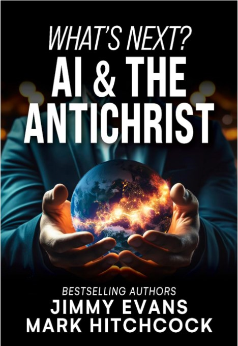
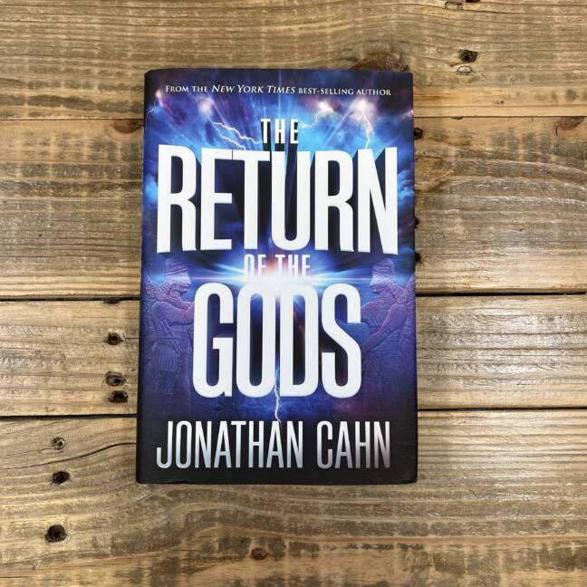
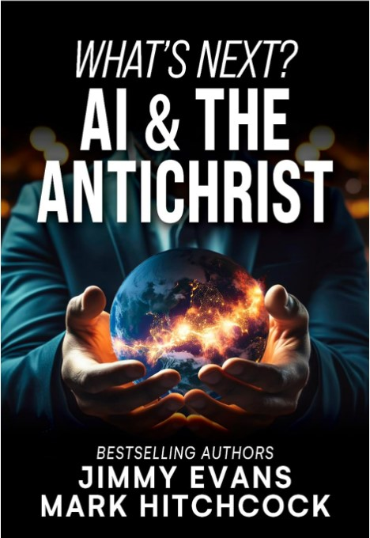
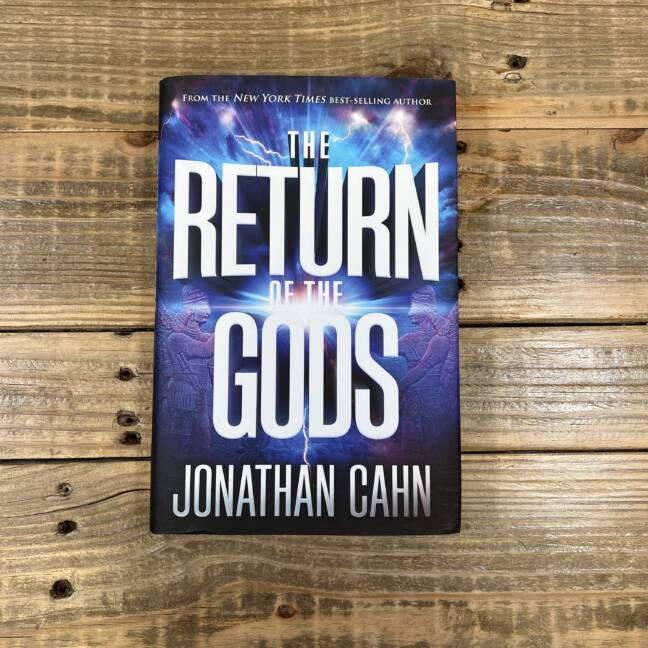

THE PARADIGM

Is it possible that there exists an ancient master blueprint that holds the secret behind the events of our times? Could this blueprint lie behind the rise and fall of leaders and governments? Could events that took place nearly 3,000 years ago now be determining the course of our world and with it the course of our lives? Could ancient figures from the Middle East hold the key to the leaders of our own day, what they do, when they rise, and when they fall? Is it possible that this ancient paradigm has determined not only the events of modern times but also their timing—even down to the exact dates? Could a mystery from the ancient Middle East have foretold the outcomes of current events more accurately than any poll or expert—even the outcomes of presidential elections? Has this mystery even touched the events of your life? Does the paradigm reveal what will take place in the future? And does it contain a warning critical for every person in this generation?
Genre
 


